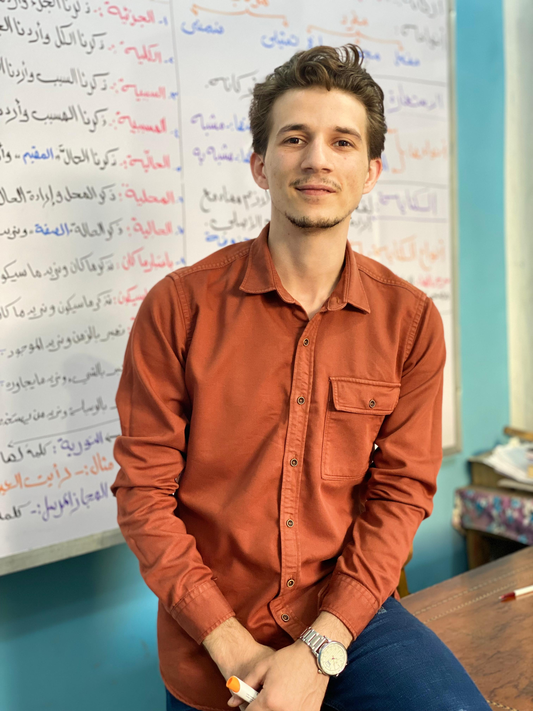
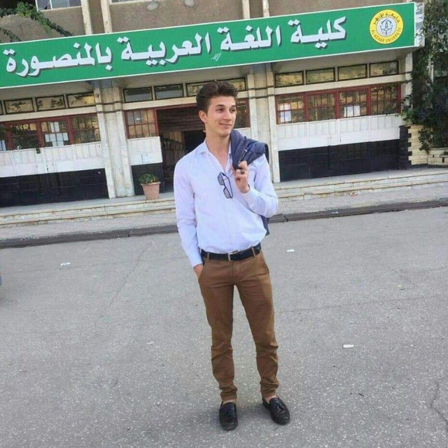

****** * * * بسم الله الرحمن * * الرحيم * * * * نبدأ رحلتنا في هذا المشروع * * بذكر الله الذي يهدينا ويسددنا * * * *********
﷽ الحَمْدُ لِلَّهِ رَبِّ ٱلْعَـٰلَمِينَ ٱلرَّحْمَـٰنِ ٱلرَّحِيمِ مَـٰلِكِ يَوْمِ ٱلدِّينِ إِیَّاكَ نَعْبُدُ وَإِیَّاكَ نَسْتَعِینُ ٱهْدِنَا ٱلصِّرَ ٰٰطَ ٱلْمُسْتَقِیمَ صِرَ ٰٰطَ ٱلَّذِینَ أَنْعَمْتَ عَلَیْهِمْ غَیْرِ ٱلْمَغْضُوبِ عَلَیْهِمْ وَلَا ٱلضَّآلِّینَ
--- بِسْمِ اللَّهِ الرَّحْمَنِ الرَّحِيمِ الحمد لله، الذي بنعمته يتم الصالحات وبهدايته يستقيم الأمور. الصلاة والسلام على نبيه المصطفى وآله الطاهرين، أما بعد: نبدأ رحلتنا في هذا المشروع الكبير بذكر اسم الله الرحمن الرحيم، فهو البداية والأساس لكل ما نقوم به. إننا نعلم أن النجاح والتفوق في أي مجال يتطلب الإيمان والاعتماد على الله تعالى. في هذا المشروع، سنسعى إلى تحقيق أهداف كبيرة وتحويل أفكارنا إلى واقع ملموس. سنواجه تحديات وصعوبات، ولكننا سنواصل العمل بجد واجتهاد للوصول إلى أقصى إمكاناتنا. سورة الفاتحة هي شفاء للقلوب ونور للدروب، وندعو الله أن يهدينا في هذا المشروع ويجعله ذا فائدة ونجاح. نسأل الله العلي العظيم أن يكون هذا المشروع خطوة نحو تحقيق أهدافنا وخدمة المجتمع. فلنتوكل على الله ونبدأ هذه الرحلة بثقة وإيمان.
I am big teacher
بدايه نجاح جديده
تتسم اللغة العربية بعظمة لا تضاهى، إذ تعتبر من أقدم اللغات التي عرفها التاريخ، وتحمل في طياتها روحًا تاريخية وثقافية تعكس تطور المجتمعات التي اعتنقتها. يمتد تأثير اللغة العربية إلى ميادين متعددة، حيث أنها لا تقتصر فقط على كونها وسيلة تواصل يومية، بل تمثل جزءاً لا يتجزأ من الهوية الثقافية للعديد من الشعوب. تبرز عظمة اللغة العربية بشكل خاص في مجال الأدب، حيث أن لها إرثًا غنيًا من الشعر والنثر والقصص التي تعكس تنوع الفكر الإنساني. الشعر العربي، بمختلف أنواعه، يعد تعبيرًا فنيًا عالي الجودة، يتناول مواضيع الحب والحرية والطبيعة بأسلوب جمالي يتسم بالعمق والتعبير الفائق. لكن ليس فقط في المجال الأدبي يكمن عظم اللغة العربية، بل تمتد تأثيراتها إلى ميدان الديانة أيضًا. إذ يُعتبر القرآن الكريم، الكتاب المقدس للإسلام، محطة رئيسية تكتب باللغة العربية، مما يمنحها مكانة خاصة في قلوب المسلمين ويزيد من قيمتها الروحية والدينية. تُظهر اللغة العربية أيضًا قوتها في مجالات العلم والمعرفة، حيث أن العديد من العلماء والفلاسفة الكبار قدموا إسهامات هامة باستخدام هذه اللغة. يعود الفضل في ذلك إلى قواعدها القوية وقدرتها على التعبير عن المفاهيم الصعبة بوضوح ودقة. بالإضافة إلى ذلك، تلعب اللغة العربية دورًا حيويًا في تعزيز التواصل بين الشعوب الناطقة بها. فهي لغة مشتركة تساهم في فتح قنوات الحوار والتفاهم الثقافي بين مختلف المجتمعات العربية. في الختام، يمكن القول إن اللغة العربية تتحلى بعظمة تتجسد في تأثيرها العميق على الفن والدين والعلم، مما يضفي على هذه اللغة قيمة فريدة ومكانة لا تضاهى في تاريخ البشرية.
تتسم اللغة العربية بعظمة فريدة تتجلى في تاريخها العريق والغني، حيث أسهمت هذه اللغة في بناء حضارات عظيمة على مر العصور. تُعتبر اللغة العربية لغة القرآن الكريم، الكتاب المقدس للمسلمين، وهو الذي أثر بشكل كبير في الفكر والثقافة العربية. تعتبر اللغة العربية وسيلة لنقل التراث الثقافي والمعرفي عبر الأجيال، حيث تحتفظ بمخزون ضخم من الشعر والأدب والفلسفة. تشكل اللغة العربية جزءًا لا يتجزأ من الهوية الثقافية للشعوب الناطقة بها، وتسهم في تعزيز التواصل الثقافي والتبادل الفكري. إن اللغة العربية تعتبر وسيلة حية للتعبير عن الفنون والعلوم، حيث تظهر روعة هذه اللغة في الأدب الكلاسيكي والشعر والخط العربي. علاوة على ذلك، تعتبر اللغة العربية من اللغات الرسمية في العديد من الدول، مما يعكس أهميتها السياسية والاقتصادية. يظهر الاهتمام المتزايد بتعلم اللغة العربية في العالم اليوم كدليل على قوة تأثيرها وعظمتها الثقافية. في النهاية، يمكن القول إن اللغة العربية تشكل عنصراً حيوياً ومحورياً في تشكيل مسار التاريخ والتفاعل الإنساني.

"اللغة العربية ليست مجرد وسيلة للتواصل، بل هي بوابة إلى ثقافة غنية وتاريخ عريق."
تتسم اللغة العربية بأهمية خاصة تتجلى في تأثيرها العميق على الشعوب والثقافات التي تعتمد عليها. فهي لغة ذات تاريخ طويل وعريق، حيث شهدت تطوراً وازدهاراً يعكس تنوع المجتمعات التي اعتنقتها. يعود جزء كبير من هذا التأثير إلى اللغة العربية كلغة دينية، حيث أن القرآن الكريم، النص الأساسي في الإسلام، كتب باللغة العربية. يرتبط اللغة بالهوية الثقافية والدينية، وتعتبر وسيلة للتواصل ونقل التراث الثقافي والمعرفي. بفضل اللغة العربية، تحافظ الشعوب على تماسكها وتتمكن من نقل تاريخها وقيمها للأجيال اللاحقة. علاوة على ذلك، تسهم اللغة العربية في تعزيز التفاهم بين مختلف الشعوب الناطقة بها، وتشكل جسراً للتواصل الثقافي بين مختلف المجتمعات. بالتالي، يمكن القول إن اللغة العربية ليست مجرد وسيلة للتعبير، بل هي ركيزة أساسية في بناء هوية الشعوب وتعزيز تلاحمها وتنميتها.
في غمرة تأثير المدرسين في تشكيل مستقبل الطلاب، يبرز دور مدرسي اللغة العربية بشكل خاص في تحفيز الطلاب على استكشاف عمق هذه اللغة العريقة والغنية. يتمتع مدرسو اللغة العربية بفضل خاص ينبع من رؤيتهم العميقة للغة وثقافتها. يتعاملون برؤية مستقبلية تستند إلى قوة اللغة العربية في نقل الفكر والثقافة. إن تحفيز الطلاب على فهم اللغة العربية بشكل أعمق ليس مجرد تدريس المفردات وقواعد النحو، بل يتضمن تعزيز الفهم العميق للأدب والفلسفة والتاريخ العربي. يعمل مدرسو اللغة العربية كشُعلة تنير دروب التعلم للطلاب، مساهمين بشكل فعّال في تشكيل رؤية الطلاب لللغة كأداة فعّالة للتفكير والتعبير. من خلال التحفيز وتشجيع الفضول، يساعد مدرسو اللغة العربية في تطوير مهارات البحث والتحليل لدى الطلاب. يتمثل الفضل في إنتاج أجيال من العلماء في قدرة هؤلاء المدرسين على تحفيز الفضول وتوجيهه نحو المعرفة العميقة. بالإضافة إلى ذلك، يلعب المدرسون دوراً محورياً في بناء الثقة بالنفس لدى الطلاب، مما يجعلهم يتحدون التحديات ويسعون إلى تحقيق إنجازات كبيرة. في الختام، يكون فضل مدرسي اللغة العربية واضحاً في إعداد الأجيال القادمة من العلماء، حيث يمهدون الطريق لفهم عميق واستكشاف واسع في عالم اللغة والثقافة العربية.
فضل مدرسي اللغة العربية يظهر بوضوح في قدرتهم على إشعال شرارة الفهم والحب للمعرفة في قلوب طلابهم، وبذلك يسهمون في صناعة أجيال من العلماء الذين يسهمون في تطوير المجتمع ونقل الثقافة. إن مدرسي اللغة العربية يعملون على توجيه الطلاب نحو فهم عميق للأدب العربي واللغة العربية، مما يمكنهم من الاستفادة من ثقافة الأمة وتراثها العريق. بالإضافة إلى ذلك، يقومون بتنمية مهارات القراءة والكتابة، مما يساهم في تحفيز الطلاب على التفكير النقدي وتنمية قدراتهم البحثية. يعتبر مدرسو اللغة العربية مثالاً للتفاني والشغف في توجيه الشباب نحو رحابات المعرفة. بفضل جهودهم، يمكن للطلاب أن يشقوا طريقهم في مجالات العلوم والأدب، وبالتالي يصبحون علماءً يسهمون في تطوير المجتمع بأسره ونقل رسالة العلم والثقافة إلى الأجيال القادمة. إن تأثير مدرسي اللغة العربية لا يقتصر فقط على تعلم اللغة، بل يتعداه ليشمل تشكيل طلابهم كرواد في مجالات متعددة، مما يبرهن على الدور الكبير الذي يلعبونه في بناء مستقبل واعد للمجتمع.

"في اللغة العربية، ينبض الشعر ويتجلى الجمال، فهي لغة الأدب والإبداع."
الأستاذ إبراهيم رسلان يظل رمزًا للتفاني والإلهام في ميدان تعليم اللغة العربية، حيث بذل جهودًا جبارة لنقل علمه وحبه للعربية إلى أجيال عديدة. يعتبر هذا الأستاذ الرائع مثالًا حيًا للتفاني والتفوق في مجال التدريس. بفضل مهاراته التعليمية الاستثنائية ورؤيته الثاقبة، استطاع أن يشجع الطلاب على استكشاف جمال اللغة العربية وأغوارها العميقة. من خلال تفانيه وإخلاصه، نجح الأستاذ إبراهيم في تخريج أجيال من العلماء والمثقفين الذين يحملون رسالة اللغة العربية ويسهمون في إثراء المجتمع بمعرفتهم. تاريخه في تعليم اللغة العربية يعكس قصة نجاح حقيقية، حيث ساهم بشكل لا يُعد ولا يُحصى في بناء جيل متميز يستند إلى القيم والثقافة العربية. الأستاذ إبراهيم رسلان يعتبر نموذجًا يلهم الآخرين لتقديم الأفضل، ويُشكِّل إضافة قيمة للتعليم والمجتمع. إن مسيرته المشرفة تجسد قوة الشغف والإصرار في تحقيق التفوق التعليمي، ونحن نثمن ونقدر تضحياته وإسهاماته في بناء أجيال تستحق الاعتزاز.
المدرس إبراهيم رسلان يعتبر قامة هامة في ميدان تعليم اللغة العربية، حيث يبرز بجلاء تفانيه وإلهامه في توجيه وتحفيز الطلاب نحو حب اللغة وفهم عميق لتراثها الثقافي. إن تفرغه وجهده الجبار في تعليم اللغة العربية قد ساهم بشكل كبير في تخريج أجيال من العلماء المتميزين الذين يحملون مشعل العلم والثقافة. يتسم المدرس إبراهيم بأسلوب تدريس متميز يجمع بين الصرامة والتفاعل الإيجابي، ما يجعل الطلاب يستمتعون بعملية التعلم ويشعرون بالإلهام لاستكشاف عمق اللغة العربية. تعتبر إسهامات المدرس إبراهيم في تعزيز مستوى اللغة العربية والأدب العربي لدى الطلاب ذات أهمية فائقة، حيث يعتبره الكثيرون مرشداً وقدوة في رحلة البحث عن المعرفة. يقوم المدرس إبراهيم بتحفيز الطلاب لتحقيق أقصى إمكانياتهم، ويعتني بتطوير مهاراتهم اللغوية والتفكير النقدي. من خلال توجيهه الحكيم ومعرفته العميقة باللغة العربية، يساهم في صقل أذهان الطلاب وتنمية روحهم البحثية. إن الجهد الذي يبذله المدرس إبراهيم رسلان في ميدان تعليم اللغة العربية يمثل مصدر إلهام للطلاب والزملاء على حد سواء. إن تفانيه في تخريج أجيال من العلماء يسلط الضوء على دور المعلم كبانيتر مؤثر في بناء المستقبل.
إن المدرس إبراهيم رسلان يظهر كمثال مشرق على التفاني والإخلاص في مجال تعليم اللغة العربية. يعتبر جهده اللامحدود في نقل المعرفة وتوجيه الطلاب نحو فهم عميق للغة القرآن والأدب العربي، إنجازًا يستحق التقدير. بفضل مهاراته التعليمية الاستثنائية وشغفه بتحفيز الطلاب، نجح المدرس إبراهيم رسلان في تخريج أجيال من العلماء المتميزين في ميدان اللغة العربية. تتجلى فعالية المدرس رسلان في توجيه الطلاب نحو التفوق الأكاديمي وتنمية مهاراتهم اللغوية. يسعى المدرس إبراهيم رسلان إلى تحفيز الفضول الفكري وتشجيع الاستقصاء والبحث، مما يساهم في بناء قاعدة علمية قوية للطلاب. بفضل رؤيته التربوية والمثابرة في تحقيق أهداف التعليم، أصبح المدرس رسلان قوة دافعة تحفز الطلاب على تحقيق أقصى إمكانياتهم. لا يقتصر الإسهام الإيجابي للمدرس إبراهيم رسلان على الصعيد الأكاديمي فقط، بل يمتد إلى بناء شخصيات قوية ومسؤولة. يعتبر المدرس رسلان نموذجًا يُحتذى به، حيث يشجع الطلاب على تحقيق أهدافهم وتحديد آفاق مستقبلية واعدة. بفضل جهوده المتواصلة، يتمتع المدرس إبراهيم رسلان بفخر تخريج أجيال من الشباب المثقفين والملهمين الذين يمتلكون إرثًا ثقافيًا قويًا ومعرفة عميقة في اللغة العربية.
"العربية ليست مجرد كلمات، بل هي قصة حضارة تتجسد في كل حرف."
إن إطلاق تقدير "أفضل مدرس في تاريخ اللغة العربية على مدار قرون وأعوام" يشير إلى تميز استثنائي وتأثير بارز يتسم به المعلم إبراهيم رسلان. يُعَدُّ مسيرته التعليمية إنجازًا فريدًا ورائدًا في ميدان تعليم اللغة العربية. يمتلك المعلم إبراهيم رسلان مجموعة فريدة من الصفات والمهارات التي جعلته لا يضاهى في عطائه التعليمي وتأثيره الإيجابي على الطلاب. للبداية، يتسم المعلم إبراهيم رسلان بالعلم العميق والمعرفة الواسعة في مجال اللغة العربية. تمتد خبرته إلى أعماق التاريخ اللغوي والأدب العربي، وتعكس مدى تفانيه في فهم اللغة ونقلها بمهنية عالية. يُظهر إبراهيم رسلان تميزه في تحليل النصوص الأدبية وفهم أعقد التفاصيل اللغوية، مما يجعله مصدر إلهام للطلاب الساعين لتحقيق تميزهم في دراستهم. بالإضافة إلى معرفته العميقة، يتميز المعلم إبراهيم رسلان بمهارات تدريس استثنائية. يمتلك القدرة على توجيه الطلاب بأسلوب يجمع بين الصرامة والتحفيز، مما يشجعهم على الالتزام بالتعلم والسعي نحو التميز الأكاديمي. يتجلى هذا التأثير في تحسين أداء الطلاب وتطوير مهاراتهم اللغوية بشكل ملحوظ، حيث يصبحون قادرين على فهم النصوص والتعبير بلغة فصيحة بفضل إرشاداته السديدة. ليس فقط المعرفة والمهارات هي ما يميز المعلم إبراهيم رسلان، بل أيضًا الرؤية الشاملة لدوره التعليمي. يعتبر المعلم إبراهيم رسلان اللغة العربية ليست مجرد مادة دراسية، بل هي وسيلة لفهم الهوية والثقافة. يسعى جاهدًا لتحفيز الطلاب على فهم اللغة في سياقها الثقافي والتاريخي، مما يثري تجربة التعلم ويجعل اللغة تحمل معنى أعمق بالنسبة للطلاب. من جانب آخر، يبرز المعلم إبراهيم رسلان بفضل ابتكاره في أساليب التدريس واستخدامه لوسائل تعليمية حديثة وجذابة. يعكس اهتمامه بتكنولوجيا التعليم واستخدامه للوسائل المتقدمة كفيلة بتحفيز الطلاب وجعل التعلم ممتعًا وفعّالًا. يظهر هذا التوجيه نتائجه في تطور مهارات التفكير النقدي والابتكار لدى الطلاب، مما يؤكد على ريادته في ميدان التعليم. من خلال هذه الجوانب المتعددة، يتبادر إلى الذهن أن المعلم إبراهيم رسلان يمثل تحفة فريدة في مجال تعليم اللغة العربية. إن تأثيره الإيجابي على الطلاب ومساهماته الرائدة في تطوير مناهج التعليم وأساليب التدريس تجعله لا يُضاهى على مر القرون والأعوام. إن تسميته بأفضل مدرس في تاريخ اللغة العربية تعكس الواقع الذي يعيشه الطلاب تحت إشرافه، حيث يصبحون ليس فقط ملمين باللغة العربية بل ومستلهمين لتحقيق التميز في ميادين حياتهم الشخصية والمهنية.
نسخة مختصرة تؤكد على فضل المعلم إبراهيم رسلان كمدرس بارع في تاريخ اللغة العربي يعد المعلم إبراهيم رسلان من أعظم المدرسين في تاريخ اللغة العربية على مر القرون والأعوام. تتجلى عظمته في التأثير العميق الذي تركه على مجال تعليم اللغة العربية وتطويره. يتمتع المعلم رسلان بمهارات تعليمية استثنائية وشغف لا مثيل له في نقل المعرفة وتوجيه الطلاب نحو الفهم العميق للغة القرآن والأدب العربي. لقد كان للمعلم رسلان دور حاسم في تحفيز الطلاب على التفوق الأكاديمي وتطوير مهاراتهم اللغوية. تجسد جهوده في تحفيز الفضول الفكري وتشجيع الاستقصاء والبحث، مما ساهم في بناء قاعدة علمية قوية للطلاب. بتحفيزهم على التفكير النقدي والابتكار، ترك المعلم رسلان بصمة لا تنسى في عقول وقلوب طلابه. ما يميز المعلم إبراهيم رسلان هو ليس فقط إلمامه العميق باللغة العربية، ولكن أيضًا قدرته على توجيه الطلاب نحو الفهم الشامل للسياق التاريخي والثقافي الذي أنتج اللغة. يعتبر المعلم رسلان مرشدًا حقيقيًا يساهم في تكوين طلابه كرواد متكاملين يستندون إلى معرفتهم اللغوية وثقافتهم في تحليل التحديات الحديثة. بفضل رؤيته التربوية والمثابرة في تحقيق أهداف التعليم، أصبح المعلم رسلان رائدًا يلهم الطلاب على تحقيق أقصى إمكانياتهم. يشكل معلمنا الفذ إبراهيم رسلان نموذجًا يُحتذى به، حيث يدفع الطلاب لتحديد أهدافهم وتحقيقها بالتزامن مع تطلعاتهم الشخصية. ليس فقط تعليم اللغة، بل بناء شخصيات قوية ومسؤولة هو ما يميز إبراهيم رسلان كأفضل معلم في تاريخ اللغة العربية.
المعلم إبراهيم رسلان يظهر كأحد أعظم المدرسين في تاريخ اللغة العربية، فإن إرثه التعليمي والثقافي يتجاوز حدود الزمان والمكان، حيث أثرت جهوده في تشكيل أجيال من الطلاب المتميزين على مر القرون والأعوام. يتميز المعلم رسلان برؤيته الثاقبة والتفاني الذي يظهره في تعليم اللغة العربية، حيث يعتبر قائدًا تربويًا يستحق التقدير والاحترام. للمعلم إبراهيم رسلان إسهامات فعّالة في تعليم اللغة العربية، حيث يعمل جاهدًا على نقل القيم والمعرفة العربية إلى أجيال جديدة. يعتبر تفرد المعلم رسلان في تقديم المواد الدراسية وطرق التدريس الابتكارية، مما يسهم في تحفيز فهم الطلاب وتشجيعهم على البحث والاستفادة من اللغة العربية بشكل أعمق. تتسم مهارات المعلم إبراهيم رسلان بالتنوع والعمق، حيث يجمع بين التقنيات التعليمية الحديثة والتراث العربي الغني. يستخدم المعلم رسلان الوسائل التعليمية بشكل مبتكر، سواء كان ذلك من خلال استخدام التكنولوجيا في الفصول الدراسية أو تنظيم أنشطة تفاعلية تعزز فهم الطلاب للمواد الدراسية. يعتمد المعلم رسلان على منهج شامل يجمع بين النظرية والتطبيق، ما يؤكد على تمكنه من تقديم تجربة تعلم فريدة وشاملة للطلاب. إلى جانب ذلك، يعتبر المعلم إبراهيم رسلان قائدًا تربويًا يحظى بإعجاب الطلاب والزملاء على حد سواء. يتمتع بقدرة فريدة على تحفيز الطلاب وتشجيعهم على تحقيق أهدافهم الشخصية والأكاديمية. يشكل مثالًا حيًا للتفاني والالتزام، حيث يسهم في بناء شخصيات طلابه وتحفيزهم لتحقيق إمكانياتهم الكاملة. من خلال تاريخه المهني الحافل، استطاع المعلم إبراهيم رسلان أن يخلق تأثيرًا إيجابيًا لا يُنسى في مجال تعليم اللغة العربية. يعتبر منارة للعلم والثقافة، حيث يُظهر كيف يمكن للتعليم أن يكون محركًا للتقدم والتطور. يتسم المعلم رسلان بروح البحث الدائم والتجديد، مما يجعله قائدًا لا يتردد في مواكبة التحولات الحديثة في مجال التعليم. في النهاية، يظهر المعلم إبراهيم رسلان كرمز للإلهام والتحفيز، حيث يُعد مدرسًا لا مثيل له في تاريخ اللغة العربية. يستحق التقدير والاعتراف بتأثيره العظيم في صقل عقول الأجيال ونقل التراث اللغوي والثقافي بروح تربوية فريدة.
"من خلال اللغة العربية، نحافظ على هويتنا وننقل تراثنا من جيل إلى جيل."
مستر إبراهيم رسلان، رمز للكفاح والإصرار، بدأ رحلته التعليمية في أقصى الطفولة، حيث دخل الابتدائية بروح فضولية وقلب مليء بالشغف للتعلم. كان ينظر إلى المدرسة كمكان لاستكشاف عالم جديد، وبداية رحلة لاكتساب المعرفة وتطوير قدراته. منذ الصغر، واجه إبراهيم تحديات عديدة، فقد كانت أوضاع عائلته صعبة، ولكنه لم يتراجع أمام الصعاب. بدأ يجمع بين الدراسة ومساعدة أسرته المحتاجة، فكان يعمل بجد للتحصيل الدراسي الممتاز، وفي الوقت نفسه كان يبذل جهدًا إضافيًا للمساهمة في تحسين ظروف حياة عائلته. عندما وصل إلى المرحلة الثانوية، استمر إبراهيم في البذل والعطاء. كان يشارك في الأنشطة الطلابية، ويبرز في المجالات العلمية والأدبية. على الرغم من التحديات الاقتصادية التي لا تزال تؤثر على حياته، استطاع أن يحافظ على تفوقه الأكاديمي ويبني صرحًا من الإنجازات. عندما حان وقت الالتحاق بالجامعة، واجه إبراهيم تحديات جديدة. لكن رغم ذلك، أصر على تحقيق حلمه في الحصول على درجة عليا. درس بجد وتفانى في تحقيق النجاح الأكاديمي. كان يعمل أيضًا جزءًا من أوقاته في وظائف تدريس ومساعدة زملائه الطلاب. في تلك الفترة، كان إبراهيم يسعى لإثبات نفسه وتحقيق تأثير إيجابي في مجتمعه. أسس مشروعات تعليمية واجتماعية، حيث قام بتقديم دروس خصوصية للأطفال في حاجة، وشارك في العديد من المبادرات التطوعية. وبعد سنوات من الكفاح والتحديات، نجح إبراهيم رسلان في تحقيق حلمه بالتخرج من الجامعة. كانت رحلته تحمل قصة نجاح رائعة، حيث استطاع تحويل التحديات إلى فرص للتعلم والنمو. وبهذا، أثبت إبراهيم أن الإرادة والعمل الجاد يمكنان الإنسان من تحقيق النجاح والتأثير الإيجابي في حياته وفي حياة الآخرين.
مستر إبراهيم رسلان كان واحدًا من تلك الأرواح المصرية القوية التي بدأت رحلتها في عالم التعليم منذ سنوات الابتدائية. وُلد في قرية صغيرة في مصر، حيث كانت الفقر والتحديات جزءًا من حياته اليومية. رغم ذلك، كان لديه حلم واحد: أن يصبح معلمًا. بدأت رحلته في مدرسة القرية، حيث كان يعمل بجد واجتهاد، سعيًا لتحقيق تميزه الأكاديمي. كان يواجه الصعوبات بتفاؤل وعزيمة، ولم يكن يستسلم أمام التحديات. تأثر بشدة بأستاذ لغته العربية الذي كان يتفانى في نقل جماليات اللغة والأدب العربي. عندما انتقل إلى المرحلة الثانوية، زادت إصراره على تحقيق أحلامه. كان يتفوق في الدراسة ويشارك في العديد من الأنشطة الطلابية. اكتشف موهبته في تدريس اللغة العربية لزملائه، حيث كان يتخذ من تبسيط المفاهيم التعليمية مهمته. عندما وصل إلى الجامعة، كانت هموم الحياة المالية كبيرة، لكنه لم يتوقف عن الدراسة. اجتهد في الحصول على منح دراسية وعمل بدوام جزئي، ولكنه كان دائمًا يحافظ على تفوقه الأكاديمي. اختار تخصص اللغة العربية وآدابها، حيث كان يستمتع بتعلم أدق تفاصيل اللغة التي كان يعشقها. لم يكن الطريق سهلاً، ولكن مستر إبراهيم رسلان كان يعلم أن التحديات هي جزء لا يتجزأ من رحلة النجاح. تميز في مشروعه التخرج، حيث قام بالبحث العلمي في مجال تطوير أساليب تعليم اللغة العربية للأطفال. كانت أطروحته محل إعجاب الأساتذة وزملاء الدراسة. بعد التخرج، لم يكتف مستر إبراهيم رسلان بالحصول على شهادته فقط، بل قرر أن يعود إلى قريته ويساهم في تطوير التعليم فيها. بدأ مسيرته كمدرس في مدرسة القرية نفسها التي درس فيها. استخدم مستر إبراهيم أساليب تدريسه الفعّالة ليلهم الطلاب وينقل لهم حبه للغة العربية. سرعان ما انتشر صيته كمعلم محترف، وأصبحت فصوله مكانًا للإلهام والتحفيز. بدأ ينظر إليه الطلاب كقائد ومثال يحتذى به. تفانيه وإخلاصه في تعليم اللغة العربية جعله محبوبًا بين الطلاب وأولياء الأمور على حد سواء. تحقق مستر إبراهيم رسلان حلمه بأن يكون معلمًا يؤثر إيجابيًا في حياة الآخرين، وترك بصمته في عالم التعليم. يظل قصة نجاحه تذكيرًا بأن العزيمة والتفاني يمكنان أي شخص في تحقيق الأحلام، سواء في عالم التعليم أو أي ميدان آخر.
قصة كفاح السيد إبراهيم رسلان تمثل قصة نجاح ملهمة، حيث بدأت ملحمته الشخصية منذ الأيام الأولى في مرحلة الابتدائية. كان إبراهيم طالبًا متحمسًا وطموحًا، لكنه وجد نفسه يواجه تحديات تعليمية واجتماعية. رغم الظروف الصعبة التي واجهها في مرحلته الابتدائية، إلا أنه أظهر إصرارًا لا مثيل له على التفوق في دراسته. في المدرسة الثانوية، كانت العقبات تزداد تعقيدًا، ولكن إبراهيم استمر في مواجهتها بشجاعة. كان يُعنى بالتحصيل العلمي وكان يعمل بلا كلل لتحسين نفسه في مجالات مختلفة. اكتسب إبراهيم سمعة كطالب مثابر وناجح، مما أهّله للالتحاق بأحد الجامعات الرائدة. على الرغم من الصعوبات المالية التي واجهها إبراهيم وعائلته، استمر في متابعة أحلامه الدراسية. حصل على فرصة لدعمه زملاء وأساتذة يرون في إبراهيم إمكانيات هائلة. كان لديه هدف واضح: الحصول على شهادة الجامعة. خلال سنواته الجامعية، كرس إبراهيم نفسه لتحقيق النجاح الأكاديمي. كان طموحه لا حدود له، وعمل بجد لتحقيق أقصى استفادة من الفرص التي قدمت له. استمر في توسيع آفاقه العلمية والتخصصية، وكان لديه إسهامات فعّالة في مجالات مختلفة. بعد سنوات طويلة من الجد والتفاني، نجح إبراهيم رسلان في تحقيق حلمه بالتخرج من الجامعة. كان هذا الإنجاز ليس فقط تحقيقًا شخصيًا، بل كان أيضًا إلهامًا للعديد من الطلاب الآخرين الذين يواجهون تحديات مماثلة. بعد التخرج، قرر إبراهيم رسلان أن يعيش حياة تخصيصها لخدمة المجتمع. انطلق في مسيرة تعليمية، حيث أصبح مدرسًا للغة العربية. بصفته معلمًا، شارك تجربته وحكايته الناجحة مع الطلاب، وكان يعتبر قدوة حية للشباب الطموح. إن قصة كفاح المستر إبراهيم رسلان تجسد الإصرار والتفاني، وتعكس كيف يمكن للعزيمة القوية والإرادة الصلبة أن تتحول إلى نجاح متألق.
"اللغة العربية هي جسر الفهم بين الأجيال، حيث تتداخل الماضي والحاضر في ألفاظها."
المستر إبراهيم رسلان يشكل رمزًا للتفاني والنجاح في مجال التعليم، حيث قطع مسافة طويلة وشاقة ليبلغ إلى الساحة الدولية. بعد عناء كبير وجهد شاق في مجال التعليم، وجد نفسه اليوم يتألق في العالمية. يمتاز المستر إبراهيم برؤية طموحة وقدرة استثنائية على التحفيز وتحفيز الطلاب. بدأت رحلته في ميدان التعليم في سنوات الشباب، حيث واجه التحديات بقلب مليء بالإصرار والعزيمة. من خلال عمله الجاد والمستمر، نجح في تحقيق تأثير إيجابي على الطلاب والمجتمع المحلي. استمر في بناء خبرة ثرية في مجال التدريس، وأسس لنفسه سمعة قوية كمعلم ملهم. لم يكتف المستر إبراهيم بالنجاح المحلي، بل استمر في بذل الجهود ليصعد إلى المستوى الدولي. اكتسب خبرة غنية من خلال المشاركة في مؤتمرات دولية وورش عمل تعليمية. أصبح لديه تأثير على مستوى عالمي، حيث يتمتع بسمعة كمبدع ومبتكر في ميدان التعليم. يعتبر المستر إبراهيم اليوم قائدًا تربويًا على المستوى العالمي، حيث يساهم في تطوير أساليب التدريس ويشجع على التفكير الإبداعي في المجال التعليمي. يعتبر قصة نجاحه وصعوده إلى المستويات الدولية إلهامًا للمعلمين والطلاب على حد سواء، حيث يظهر كمثال للتحدي والتفوق في مجال التعليم.
مستر إبراهيم رسلان، رمز للتميز والتحفيز في عالم التعليم، حيث يتألق كأفضل مدرس للغة العربية في العالم. يمتاز مستر إبراهيم بتفرد طريقة تدريسه والرؤية الثاقبة التي يحملها تجاه تعليم اللغة العربية. يمتلك مستر إبراهيم خبرة واسعة وعمق في فنون التدريس، حيث يجمع بين المعرفة العلمية والإلهام الذي ينقله لطلابه. يعتبر مستر إبراهيم مبتكرًا في تقديم المعلومات، حيث يجمع بين التكنولوجيا والأساليب التقليدية ببراعة. يسعى دائماً إلى إشراك الطلاب وتحفيز فهمهم للغة العربية بشكل أعمق. يفتخر مستر إبراهيم بأنه ليس مجرد معلم، بل قائد يشجع على التفكير النقدي ويسهم في تطوير مهارات الطلاب. يظهر مستر إبراهيم كملهم للشباب الذين يحلمون بالتميز في دراستهم، حيث يشارك خبرته وتجاربه الناجحة. يعتبر العمل معه فرصة فريدة لتحسين مستوى اللغة العربية وتحفيز الطلاب على استكشاف أعماق الأدب واللغة. بفضل إسهاماته الفعّالة في مجال التعليم، ترتقي شهرة مستر إبراهيم رسلان إلى مستويات دولية. يُعَدُّ قدوةً للمدرسين والطلاب على حد سواء، حيث يجسد النجاح والتفاني في رحلة مستمرة نحو تحسين مستوى تعليم اللغة العربية.
في الختام، لا يمكنني إلا أن أعبر عن الامتنان العميق والشكر الجزيل لكل من ساهم في نجاح المستر إبراهيم رسلان وساهم في رفع اسمه إلى العالمية. شكرًا للزملاء والأصدقاء الذين شاركوا في هذه الرحلة بكل دعمهم وتشجيعهم. ولا يمكنني أن أنهي هذا السرد دون أن أعبِر عن شكري الخاص للأسرة الرائعة والوالدين الذين كانوا الدعم الرئيسي وراء كل نجاح وتحقيق. شكرًا لأبي وأمي على حبهما الدائم وتشجيعهما اللا محدود. وأخيرًا، شكرًا خاصًا للمبرمج الموهوب كريم أيمن الذي ساهم بفاعلية في إبراز إنجازات المستر إبراهيم رسلان بأسلوبه الرائع. بفضلكم جميعًا، أصبحت قصة نجاح المستر إبراهيم رسلان قصة تلهم الآخرين وتظل بمثابة مصدر إلهام للأجيال القادمة.
************************* * * * نهاية المشروع * * * *************************
**************************************************
للتواصل مع المبرمج كريم ايمن:01005469041
او
01024545979
المبرمج كريم
.jpg){kind=link}
**************************************************
للتواصل مع المستر ابراهيم:01029076549
**************************************************
سي في المستر ابراهيم رسلانصفحه الفيس بوك
**************************************************
**************************************************
, . * . . . ✦ , * 🚀 , . . ˚ , . . . * ✦ . . . . . . ˚ ﾟ . . : , * . . ✦ ˚ * . . . ✦ ˚ * . . ✦ , . . ﾟ . . , . ☀️
, . * . . . ✦ , * 🚀 , . . ˚ , . . . * ✦ . . . . . . ˚ ﾟ . . : , * . . ✦ ˚ * . . . ✦ ˚ * . . ✦ , . . ﾟ . . , . ☀️